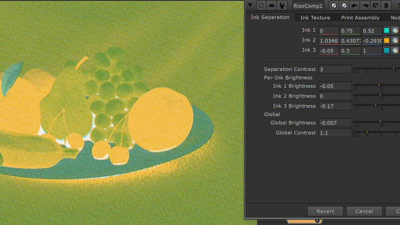
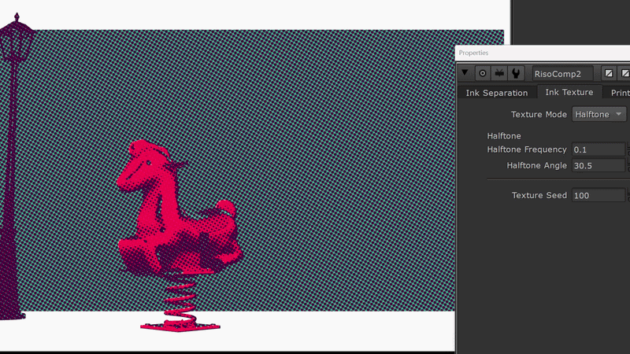
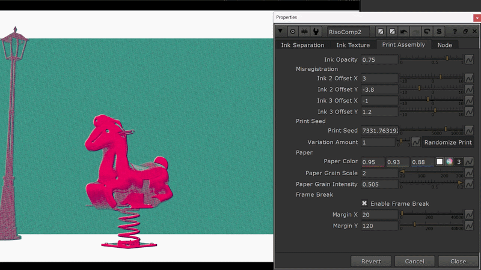
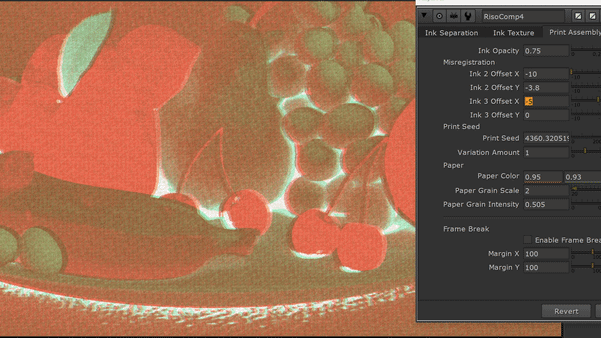
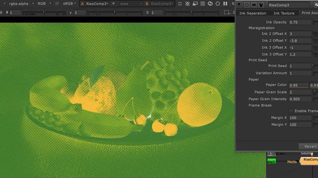

Demo
Before and after comparison.
Feature
- 3-ink risograph-style color separation
- Halftone and grain texture modes
- Shared ink palette for separation and final print color
- Per-ink brightness and global contrast controls
- Static Print Seed with Randomize Print button
- Misregistration controls for offset ink passes
- Frame matte input for breakout-style print masks
3-Ink Separation

Convert source RGB into three ink coverage plates designed for risograph-style printing. Each ink can be tuned with its own color and brightness, while global contrast controls the strength and clarity of the separated print plates.
Halftone / Grain Texture

Switch between halftone dots and grain-based ink texture.
Halftone mode creates screen-like dot patterns from the separated ink coverage, while grain mode gives softer procedural ink breakup.
Randomize Print Seed

Use the Randomize Print button to instantly create a new static variation. Each random seed produces a different print texture, paper grain, and registration feel while staying stable across frames.
Misregistration

Offset Ink 2 and Ink 3 relative to Ink 1 to recreate the imperfect plate alignment of physical risograph printing. Use subtle offsets for realistic registration drift or stronger values for a graphic poster look.
Frame Matte

Use an optional matte input to control frame breaks and breakout areas. This makes it easier to combine clean print borders with objects that extend outside the printed frame.